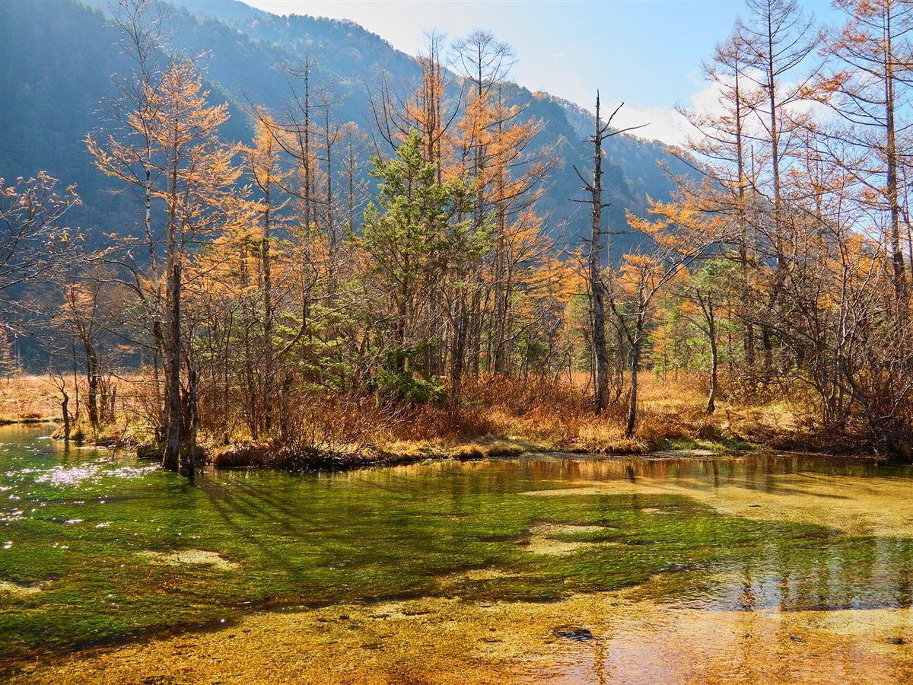
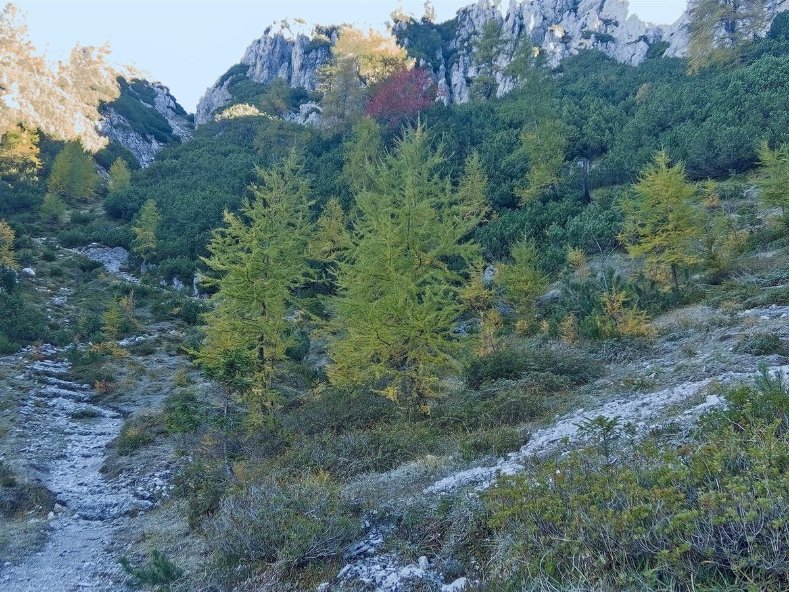

01コンセプト(制作側の案)
以下は制作側の提案であり、お店の公式見解ではありません。
大田原で、ゆっくり立ち寄る時間(仮題)
急ぐ日常から少し離れて、ゆっくり立ち寄る。栃木県大田原市での、穏やかな時間をイメージしたコンセプト案です。
季節の移ろいを眺めるような余白のある過ごし方を、ひとつの切り口として考えました。
02お店の基本情報
- 所在地
- 栃木県大田原市市野沢2110
- @hakko_shiro
- スタッフ
- 準備中(お問い合わせください)
- こだわり
- 準備中(お問い合わせください)
- 席数
- 準備中(お問い合わせください)
03ご利用のヒント
- お出かけ前に、お電話やInstagramで営業状況をご確認いただくと安心です。
- 営業時間・定休日は準備中です。お問い合わせください。
- 初めての場所へは、時間に余裕を持ってお出かけください。
